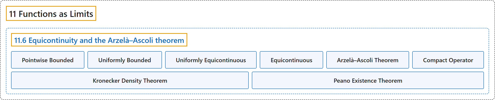

11.6 Equicontinuity and the Arzelà–Ascoli theorem
Classification

Glossary
| Term | Definition | 中文翻译 | Source |
|---|---|---|---|
| 11.6 Equicontinuity and the Arzelà–Ascoli theorem 等度连续与阿尔泽拉–阿斯科利定理 |
(No definition) | （无定义） | Lebl, 2026, section 11.6 |
| Pointwise Bounded 逐点有界 |
"Let \(X\) be a set and \(f_n \colon X \to \mathbb{C}\) be a sequence of functions. We say that \(\{ f_n \}_{n=1}^\infty\) is pointwise bounded if for every \(x \in X\), there is an \(M_x \in \mathbb{R}\) such that \(\bigl\lvert f_n(x) \bigr\rvert \leq M_x \qquad \text{for all } n \in \mathbb{N} .\)" | 设 \(X\) 是集合，\(f_n \colon X \to \mathbb{C}\) 是函数序列。若对每个 \(x \in X\)，存在 \(M_x \in \mathbb{R}\) 使得 \(\bigl\lvert f_n(x) \bigr\rvert \leq M_x \qquad \text{for all } n \in \mathbb{N} .\)，则称 \(\{ f_n \}_{n=1}^\infty\) 逐点有界。 | Lebl, 2026, Definition 11.6.1 |
| Uniformly Bounded 一致有界 |
"We say that \(\{ f_n \}_{n=1}^\infty\) is uniformly bounded if there is an \(M \in \mathbb{R}\) such that \(\bigl\lvert f_n(x) \bigr\rvert \leq M \qquad \text{for all } n \in \mathbb{N} \text{ and all } x \in X.\)" | 若存在 \(M \in \mathbb{R}\) 使得 \(\bigl\lvert f_n(x) \bigr\rvert \leq M \qquad \text{for all } n \in \mathbb{N} \text{ and all } x \in X.\)，则称 \(\{ f_n \}_{n=1}^\infty\) 一致有界。 | Lebl, 2026, Definition 11.6.1 |
| Uniformly Equicontinuous 一致等度连续 |
"Let \((X,d)\) be a metric space. A set \(S\) of functions \(f \colon X \to \mathbb{C}\) is uniformly equicontinuous if for every \(\epsilon > 0\), there is a \(\delta > 0\) such that if \(x,y \in X\) with \(d(x,y) < \delta\), we have \(\bigl\lvert f(x)-f(y) \bigr\rvert < \epsilon \qquad \text{for all } f \in S .\)" | 设 \((X,d)\) 是度量空间。若对每个 \(\epsilon > 0\)，存在 \(\delta > 0\)，使得只要 \(x,y \in X\) 且 \(d(x,y) < \delta\)，就有 \(\bigl\lvert f(x)-f(y) \bigr\rvert < \epsilon \qquad \text{for all } f \in S .\)，则称函数 \(f \colon X \to \mathbb{C}\) 的集合 \(S\) 一致等度连续。 | Lebl, 2026, Definition 11.6.6 |
| Equicontinuous 等度连续 |
"Just as for continuity, one can define equicontinuity at a point. That is, \(S\) is equicontinuous at \(x \in X\) if for every \(\epsilon > 0\), there is a \(\delta > 0\) such that for \(y \in X\) with \(d(x,y) < \delta\), we have \(\bigl\lvert f(x)-f(y) \bigr\rvert < \epsilon\) for all \(f \in S\)." | 和连续性一样，可以定义在一点处的等度连续性：若对每个 \(\epsilon > 0\)，存在 \(\delta > 0\)，使得对满足 \(d(x,y) < \delta\) 的 \(y \in X\)，对所有 \(f \in S\) 有 \(\bigl\lvert f(x)-f(y) \bigr\rvert < \epsilon\)，则称 \(S\) 在 \(x \in X\) 处等度连续。 | Lebl, 2026, section 11.6 |
| Arzelà–Ascoli Theorem 阿尔泽拉–阿斯科利定理 |
"Let \((X,d)\) be a compact metric space, and let \(\{ f_n \}_{n=1}^\infty\) be pointwise bounded and uniformly equicontinuous sequence of functions \(f_n \in C(X,\mathbb{C})\). Then \(\{f_n\}_{n=1}^\infty\) is uniformly bounded and \(\{ f_n \}_{n=1}^\infty\) contains a uniformly convergent subsequence." | 设 \((X,d)\) 是紧度量空间，\(\{ f_n \}_{n=1}^\infty\) 是逐点有界且一致等度连续的函数序列，\(f_n \in C(X,\mathbb{C})\)，则 \(\{f_n\}_{n=1}^\infty\) 一致有界，且含有一致收敛的子序列。 | Lebl, 2026, Theorem 11.6.9 |
| Compact Operator 紧算子 |
"Via Arzelà–Ascoli, we also find (exercise) that the image of the unit ball of functions \(T\bigl( B(0,1) \bigr)\) has compact closure, usually called relatively compact. Such an operator is called a compact operator." | 借助阿尔泽拉–阿斯科利定理还可以得到（习题）：函数单位球的像 \(T\bigl( B(0,1) \bigr)\) 有紧闭包，通常称为相对紧。这样的算子称为紧算子。 | Lebl, 2026, section 11.6 |
| Kronecker Density Theorem 克罗内克稠密性定理 |
"Hint: Feel free to use the Kronecker density theorem: The sequence \(\{ e^{in} \}_{n=1}^\infty\) is dense in the unit circle." | 提示：可以使用克罗内克稠密性定理：序列 \(\{ e^{in} \}_{n=1}^\infty\) 在单位圆中稠密。 | Lebl, 2026, Exercise 11.6.10 |
| Peano Existence Theorem 皮亚诺存在定理 |
"Prove the Peano existence theorem (note the weaker hypotheses than Picard, but also the lack of uniqueness in this theorem): Theorem: Suppose \(F \colon I \times J \to \mathbb{R}\) is a continuous function where \(I, J \subset \mathbb{R}\) are closed bounded intervals, let \(I^\circ\) and \(J^\circ\) be their interiors, and let \((x_0,y_0) \in I^\circ \times J^\circ\). Then there exists an \(h > 0\) and a differentiable function \(f \colon [x_0 - h, x_0 + h] \to J \subset \mathbb{R}\), such that \(f'(x) = F\bigl(x,f(x)\bigr)\) and \(f(x_0) = y_0\)." | 证明皮亚诺存在定理（注意它的假设比皮卡定理弱，但也没有唯一性）：定理：设 \(F \colon I \times J \to \mathbb{R}\) 是连续函数，\(I, J \subset \mathbb{R}\) 是有界闭区间，\(I^\circ\)、\(J^\circ\) 是它们的内部，\((x_0,y_0) \in I^\circ \times J^\circ\)，则存在 \(h > 0\) 和可微函数 \(f \colon [x_0 - h, x_0 + h] \to J \subset \mathbb{R}\)，满足 \(f'(x) = F\bigl(x,f(x)\bigr)\) 且 \(f(x_0) = y_0\)。 | Lebl, 2026, Exercise 11.6.11 |
References
Lebl, J. (2026). Basic analysis I & II: Introduction to real analysis (May 22, 2026 edition). Retrieved October 29, 2026, from https://www.jirka.org/ra/html/